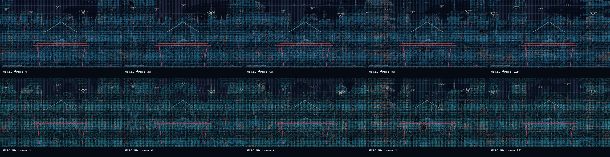

FAL text-to-video → high-density ASCII → generative breathing pass
鶴
未来
未来
Future Edo Cranes
A five-second 720p futuristic Japanese cityscape generated with FAL, converted into cinematic ASCII video, then modified into a pulsing/breathing generative terminal-city variant.
{kind=link}
{kind=link}
Outputs
Source FAL video
High-quality ASCII conversion
Pulse / breathe generative variant
QA contact sheet
{kind=link}

Clean / no-overlay version
This alternate version removes the added stylized overlay geometry David called out: no straight red foreground gate lines, no white angled Fuji/roofline lines, no kana marks, and no stylized white text-bird/crane overlays. It keeps the source-derived ASCII city conversion and the breathing/pulsing treatment.
{kind=link}
{kind=link}
{kind=link}
Process
- FAL endpoint:
bytedance/seedance-2.0/text-to-video - Generation: 720p, 16:9, 5 seconds, no audio, seed
1843799664 - ASCII renderer: OpenCV frame decode + Pillow glyph rasterization + ffmpeg encoding
- Prompt-critical fixes: explicit white crane glyphs, torii-like canal gate, Fuji ridge, kana-like neon marks
- Breathing pass: slow luminance pulse, architectural ripple arcs, scanline/glow modulation, stable city structure
All file hashes and metadata are in manifest.json. Full notes are in README.md.